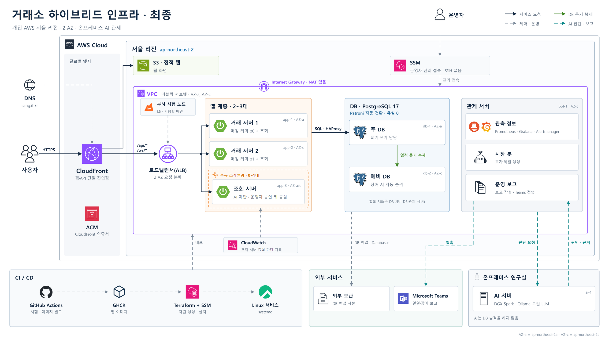

페일스톱
모의 거래소 운영 인프라
주요 설계 및 구현
04-5
전체 화면 (F)
AWS 구성도
최종 구성도
AWS 배포 구성
개인 AWS의 두 AZ에 서버를 나누고 들어오는 길은 CloudFront와 SSM으로 좁혔습니다.
서울 리전
전용 네트워크
VPC
데이터센터 1
AZ-a
데이터센터 2
AZ-c
관리 접속
사용자
운영자
인터넷
CloudFront
웹·API 진입점
S3
웹 화면
SSM
SSH 대신 원격 관리
인터넷 게이트웨이
NAT 없음
로드밸런서
두 AZ에 걸침
거래 서버 1
주문 체결·조회
조회 서버
CPU 60%·AI 판단
증설 0~1대
거래 서버 2
주문 체결·조회
주 DB
PostgreSQL 17·Patroni
예비 DB
PostgreSQL 17·Patroni
관제 서버
Prometheus·Grafana
Alertmanager
HAProxy
엄격 동기 복제
보안 그룹
서버마다 붙은 방화벽
etcd
합의 3표
최종 구성도
그림을 누르면 확대
닫기 (Esc)

 AWS 배포 구성
AWS 배포 구성